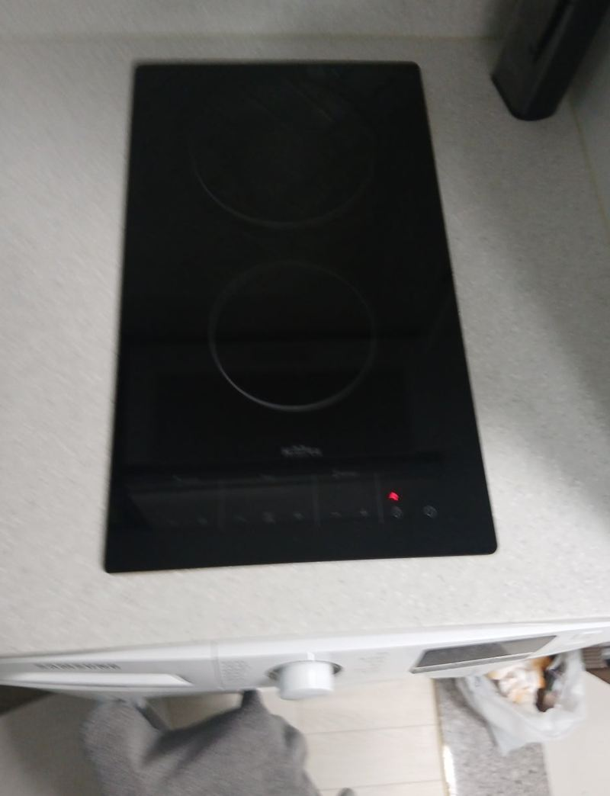
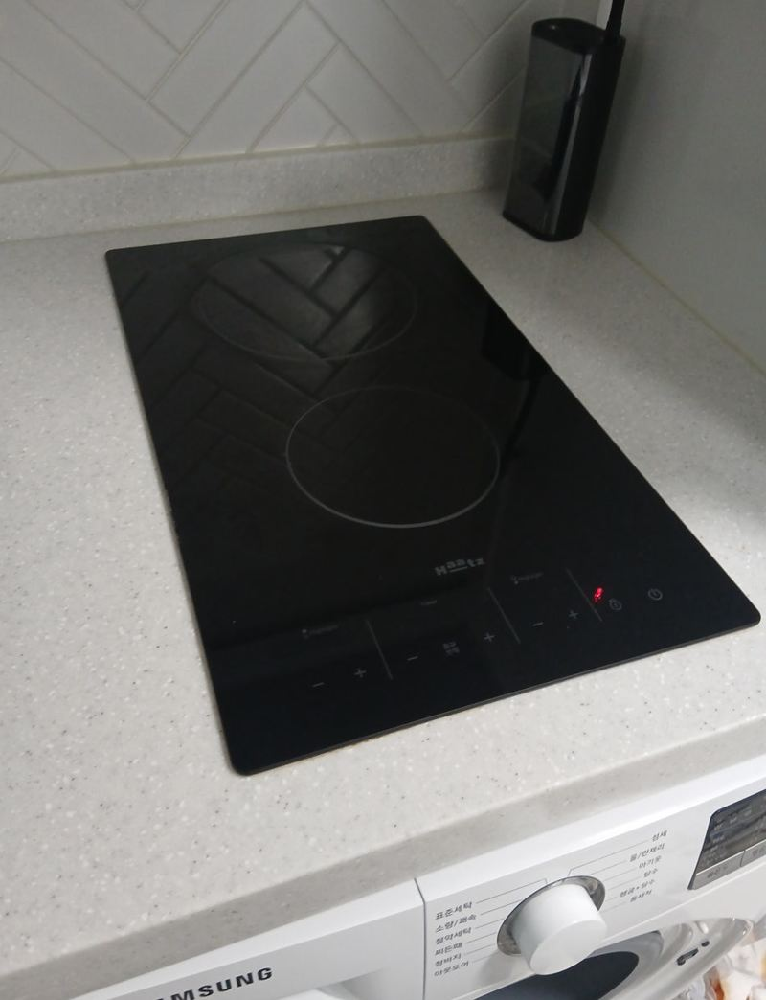
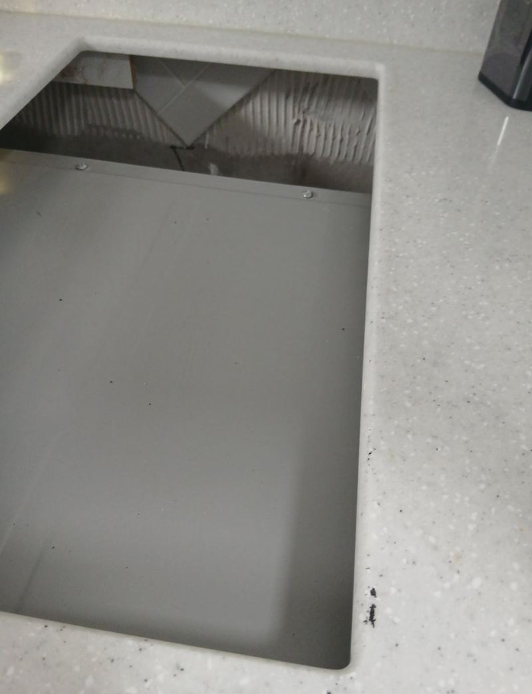
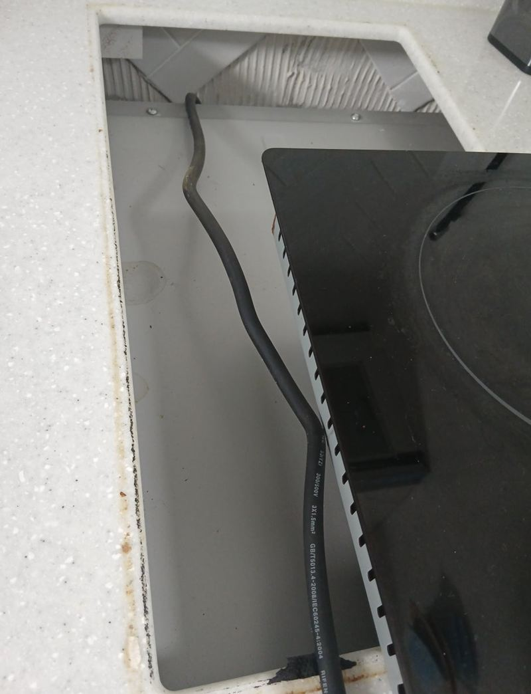
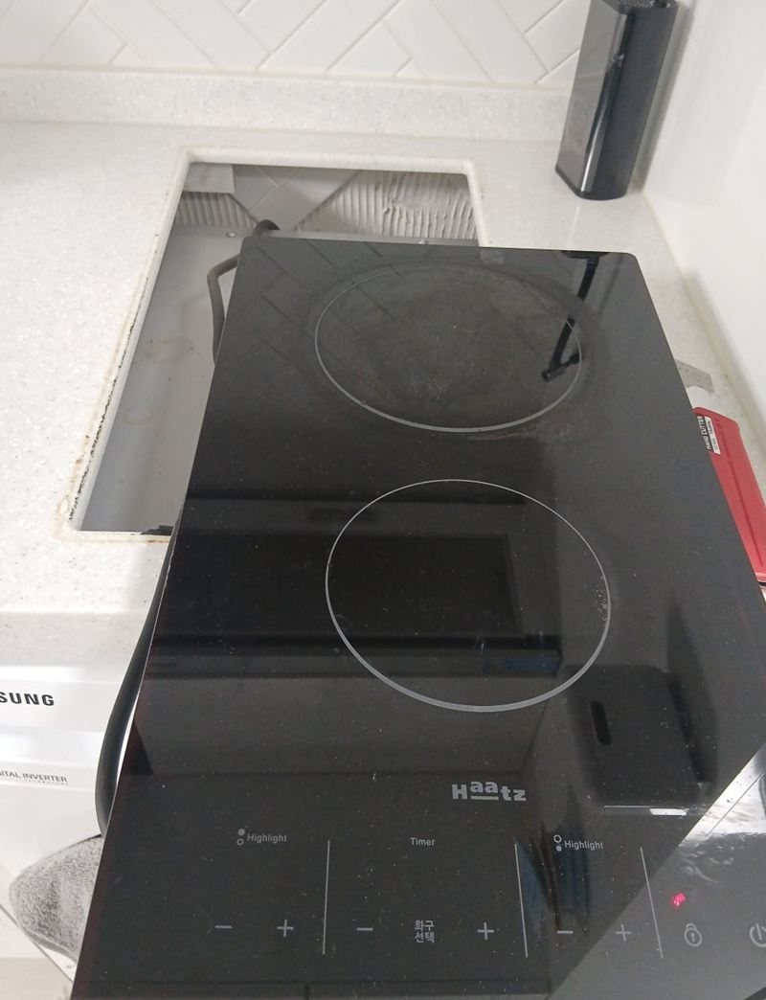
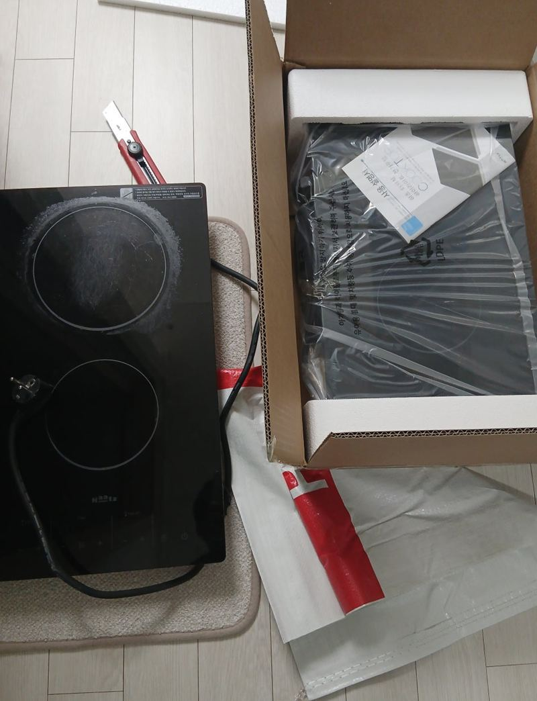

마포 인덕션·하이라이트 작동 안 될 때 교체 방법
← 밀어서 전후 비교 →
"하이라이트가 켜지다가 갑자기 불이 나가요. 한쪽 화구는 아예 안 되고 다른 쪽만 켜져요." 마포 공덕동 오피스텔에 사는 세입자분이었어요. 요리를 전혀 못 해 불편하다고 하셔서 바로 다음 날로 일정을 잡았어요. 확인해 보니 접촉 불량이 아니라 안쪽 회로가 상한 상태였어요. 전원을 내리고 옛 제품을 떼어 기름때와 실리콘을 정리한 뒤, 같은 2구 규격의 새 하이라이트를 상판 구멍 그대로 앉혀 화구마다 열이 오르는지 확인했어요.
| 현장 | 서울 마포구 공덕동 오피스텔 주방 |
|---|---|
| 증상 | 켜졌다 꺼짐, 한쪽 화구 작동 안 함 |
| 원인 | 안쪽 회로 손상 |
| 한 일 | 전원 차단·배선 점검 → 옛 제품 탈착 → 상판 기름때·실리콘 정리 → 같은 규격 설치 → 전원·접지 연결 → 화구별 작동 확인 → 실리콘 마감 → 폐제품 수거 |
증상별로 수리와 교체 가르기
하이라이트가 이상하면 일단 차단기와 콘센트를 확인해 보세요. 그래도 같다면 아래 표로 대략 판단할 수 있어요. 8~10년 넘게 쓴 제품이라면 부품을 갈아도 다른 곳이 이어서 고장 나기 쉬워 교체를 권해요.
| 증상 | 흔한 원인 | 대개 |
|---|---|---|
| 화구 하나만 안 됨 | 발열판·회로 손상 | 교체 권장 |
| 전원 불이 깜빡임 | 전원 불안정, 기판 이상 | 점검 후 판단 |
| 버튼이 안 먹힘 | 터치패널 불량, 습기 | 패널 또는 전체 교체 |
| 예전보다 늦게 데워짐 | 열선 노후 | 교체 |
| 타는 냄새·소음 | 내부 배선 피복 손상 | 바로 전원 끄고 교체 |


같은 규격 교체 순서
전원 차단과 탈착
차단기를 내리고 배선 연결부를 확인한 뒤 옛 제품을 들어냈어요.


구멍 둘레 청소
오래 쓰며 눌어붙은 기름때와 옛 실리콘을 걷었어요. 이게 남아 있으면 새 제품이 들떠 틈으로 물이 스며요.
새 제품 설치
기존이 같은 2구 규격이라 상판을 더 자를 필요가 없었어요. 전원선과 접지선을 연결하고 상판에 고정했어요.


규격이 다르면 인조대리석을 잘라야 해서 먼지가 많이 나요. 그럴 땐 주변을 꼼꼼히 덮고 작업해요. 이 현장은 그럴 필요 없이 짧게 끝났어요.
교체 후 확인한 것
- 화구별 열두 화구 모두 제대로 뜨거워지는지 봤어요.
- 타이머·온도단계 조절과 타이머가 제대로 동작하는지 확인했어요.
- 가장자리 마감청소하기 쉽게 테두리를 실리콘으로 꼼꼼히 막았어요.
떼어 낸 제품은 가져가 처리했어요. 세입자분은 "예전보다 훨씬 빨리 끓고 깔끔해서 좋다"며 바로 쓰셨어요. 고장 난 채 두면 누전이나 열 손상으로 다른 고장까지 생길 수 있어, 이상하면 빨리 보는 게 좋아요.
오피스텔 옵션 가전이 고장 났을 때
오피스텔은 하이라이트가 기본 옵션으로 달린 경우가 많아요. 세입자라면 먼저 집주인이나 관리 쪽에 알리고, 누가 교체를 맡을지 정한 뒤 연락 주시면 일이 빨라요. 이 현장도 세입자분이 바로 요리를 못 해 불편해서, 정해지자마자 다음 날로 일정을 잡았어요.
같은 규격 제품이면 상판을 건드리지 않아 짧게 끝나요. 지금 제품 아래 라벨이나 윗면 사진을 보내 주시면 같은 크기 제품을 미리 찾아 둘 수 있어요.
하이라이트 고장 질문
세입자인데 누가 비용을 내나요?
옵션으로 달린 제품이면 보통 임대인과 상의해요. 연락 전에 먼저 이야기해 보세요.
하이라이트를 인덕션으로 바꿔도 되나요?
지금 구멍에 맞는 인덕션이 있고 전기가 버티면 바꿀 수 있어요. 바닥에 자석이 붙는 냄비를 써야 해요.
상판 유리에 금이 갔어요.
금이 간 유리는 열에 깨질 수 있어 쓰지 말고 교체해 주세요.
차단기가 자꾸 내려가요.
제품 누전일 수 있어요. 전원을 끄고 점검을 받아 주세요.
오피스텔 관리실 허락이 필요한가요?
세대 안 교체는 보통 괜찮아요. 작업 시간 규정만 확인해 주세요.
모델명을 모르면요?
상판 윗면과 아래 라벨 사진이면 규격을 알 수 있어요.
다른 인덕션·하이라이트 현장
지금 제품 윗면과 증상을 알려주세요.
전화 상담 010-4517-9872